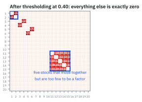
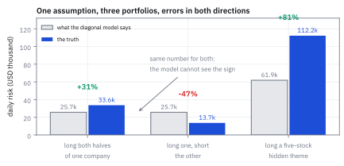

27.4 The Idiosyncratic Covariance Matrix and Off-Diagonal Clustering
factor model สมมติว่าส่วนเฉพาะตัวของหุ้นต่างตัวไม่สัมพันธ์กัน ซึ่งถูกกับเกือบทุกคู่ แต่ผิดแรงกับคู่ไม่กี่คู่ เช่นหุ้นสองชั้นของบริษัทเดียวกัน หน้านี้ประมาณแนวทแยงให้ดี หาคู่ที่ผิดด้วยเกณฑ์ที่คิดได้ แล้วใส่กลับโดยไม่ทำให้ matrix พัง
บริษัทหนึ่งมีหุ้นสองชั้นซื้อขายแยกกัน A กับ B ความผันผวนเฉพาะตัว 1.30% และ 2.21% ต่อวัน โต๊ะหนึ่งถือ long ทั้งคู่ข้างละ \$1 ล้าน อีกโต๊ะ long A \$1 ล้าน short B \$1 ล้าน เพื่อเก็บส่วนต่างราคา risk model ที่ถือว่าส่วนเฉพาะตัวไม่สัมพันธ์กันบอกว่าสองพอร์ตเสี่ยงเท่ากันที่ \$25,640 ต่อวัน ถ้าส่วนเฉพาะตัวของสองชั้นมี correlation 0.82 (ตัวเลขสมมติ) model ผิดกับพอร์ตไหน และผิดทางไหน?
ลองตอบก่อนเปิดเฉลย
ผิดทั้งคู่ และผิดคนละทิศ พอร์ตที่ long ทั้งคู่เสี่ยงจริง \$33,594 สูงกว่าที่รายงาน 31.0% พอร์ตเก็บส่วนต่างเสี่ยงจริงแค่ \$13,647 model รายงานสูงไป 87.9% ความผิดแบบหลังแพงกว่าที่เห็น: ใต้เพดานความเสี่ยงเดิม โต๊ะถูกบังคับให้ทำการเทรดที่ปลอดภัยที่สุดอันหนึ่งแค่ 53.2% ของขนาดที่ทำได้จริง และไม่มีรายงานไหนแสดงกำไรที่หายไป
สิ่งที่เราจะสร้าง
27.1 ให้ส่วนเฉพาะตัว $\hat\epsilon_{i,t}$ ของหุ้นทุกตัวทุกวัน 27.2 และ 27.3 จัดการฝั่ง factor หน้านี้สร้าง $\boldsymbol\Omega_\epsilon$ ซึ่งในพอร์ตที่กระจายดีคือก้อนความเสี่ยงที่ใหญ่กว่า (26.1) model บอกว่ามันเป็นแนวทแยง งานส่วนใหญ่จึงเป็นการประมาณ variance ทีละหุ้นให้ดี แต่ข้อสมมตินี้ผิดแรงกับคู่ไม่กี่คู่ที่คนเทรดมาก
ลำดับคือ ประมาณแนวทแยงและดึงหุ้นที่ข้อมูลน้อยเข้าหาค่าเฉลี่ย ดูว่าทำไม matrix เต็มจากข้อมูลใช้ไม่ได้ คิดว่าเสียงรบกวนล้วน ๆ สร้าง correlation ได้ใหญ่แค่ไหน และคู่จริงอยู่ตรงไหน ตัดด้วยเกณฑ์แล้วจับกลุ่มด้วยมือบนหุ้นหกตัว ดูว่าการตัดทำ matrix พังได้อย่างไร แล้วจบที่ราคาของการไม่ทำอะไรและทางเลือกสามทางกับกลุ่มที่เจอ
ศัพท์ที่ใช้ในหัวข้อนี้
- Idiosyncratic covariance matrix
- $\boldsymbol\Omega_\epsilon$ ขนาด $n\times n$ ของส่วนที่ factor อธิบายไม่ได้ แนวทแยงคือ variance เฉพาะตัว นอกแนวทแยงคือความสัมพันธ์ที่เหลืออยู่หลังหัก factor
- Share class และ dual listing
- หุ้นคนละชั้นของบริษัทเดียวกัน หรือบริษัทเดียวที่จดทะเบียนสองตลาด ราคาขยับเกือบเหมือนกันแต่ไม่เท่ากัน เป็นตัวอย่างที่ชัดที่สุดของ correlation ที่ factor จับไม่ได้
- Thresholding
- ตั้ง correlation ที่ขนาดไม่เกินเกณฑ์ $\theta$ ให้เป็นศูนย์ เก็บเฉพาะตัวที่ใหญ่พอจะไม่ใช่เสียงรบกวน
- Cluster
- กลุ่มหุ้นที่เดินถึงกันได้ผ่านคู่ที่รอดเกณฑ์ (connected component) ต้องเปิดดูว่าอธิบายได้ไหม เช่นเป็นบริษัทเดียวกัน หรือธีมเดียวกัน
- Positive definite
- สมบัติที่ทุกพอร์ตมี variance เป็นบวก ตรวจได้จาก eigenvalue ที่เล็กที่สุด (7.6) optimizer ต้องการสมบัตินี้
- Shrinkage ของ variance เฉพาะตัว
- ดึง variance ของหุ้นแต่ละตัวเข้าหาค่าเฉลี่ยของทุกตัวเล็กน้อย ช่วยหุ้นที่ข้อมูลน้อยซึ่งค่าที่วัดได้เหวี่ยง
สัญลักษณ์และหน่วย
| สัญลักษณ์ | ความหมาย | หน่วย |
|---|---|---|
| $\hat\epsilon_{i,t}$ | ส่วนเฉพาะตัวของหุ้น $i$ ในวัน $t$ จาก regression ของ 27.1 | % ต่อวัน |
| $\boldsymbol\Omega_\epsilon,\ \hat\sigma_i$ | covariance ของส่วนเฉพาะตัว และความผันผวนเฉพาะตัวที่ประมาณได้ | %², % ต่อวัน |
| $\rho_{ij},\ \hat\rho_{ij}$ | correlation จริงของส่วนเฉพาะตัวของหุ้น $i$ กับ $j$ และค่าที่วัดได้ | ไม่มีหน่วย |
| $\theta,\ \theta_\star$ | เกณฑ์ที่ใช้ตัด และเกณฑ์จากทฤษฎี | ไม่มีหน่วย |
| $n,\ T$ | จำนวนหุ้น (600) และจำนวนวัน (251) | จำนวน |
| $\delta$ | สัดส่วนที่ดึง variance เข้าหาค่าเฉลี่ย | ไม่มีหน่วย |
ขั้นที่ 1 — แนวทแยงก่อน: EWMA แล้วดึงหุ้นที่ข้อมูลน้อยเข้าหาค่าเฉลี่ย
งานส่วนใหญ่ของ $\boldsymbol\Omega_\epsilon$ คือแนวทแยง ใช้ EWMA ของ 25.5 กับ $\hat\epsilon^2$ ของหุ้นแต่ละตัว (model รายวันที่ตอบสนองเร็วใช้ half-life ราว 126 วัน) แล้วดึงเข้าหาค่าเฉลี่ยของทุกตัวเล็กน้อย สำหรับ matrix แนวทแยง shrinkage ของ 27.2 คือสิ่งนี้พอดี ตัวอย่างคือหุ้นที่เพิ่งเข้าตลาด มีข้อมูล 20 วัน วัดได้ 3.6% ขณะที่ค่าเฉลี่ยของตลาดคือ 2.2% และ $\delta=0.3$ (ค่าสมมติ)
$w_s$ คือน้ำหนักของ EWMA ใน 27.2 และ $\bar\sigma^2$ คือค่าเฉลี่ยของ $\hat\sigma_i^2$ ทุกตัว ข้อมูล 20 วันให้ความผันผวนที่คลาดได้ 15.8% (สูตร $1/\sqrt{2N}$ ของ 27.2) ค่า 3.6% จึงอาจเป็น 3.0% หรือ 4.2% ได้ง่าย การดึงเข้าหาค่าเฉลี่ย 30% ขยับมันลง 0.356 จุดเหลือ 3.244% หุ้นที่มีข้อมูลเต็มปีคลาดน้อยกว่ามาก จึงควรดึงน้อยกว่า
ส่วนเฉพาะตัวต้องมาจาก regression ที่ใช้น้ำหนักของเมื่อวาน (27.1 ขั้นที่ 8) และวันประกาศผลประกอบการต้องผ่าน tent ของ 27.3 ขั้นที่ 7 ไม่อย่างนั้นข่าวของบริษัทไม่กี่แห่งจะดันความเสี่ยงของทั้งตลาด
ขั้นที่ 2 — ทำไมใช้ matrix เต็มจากข้อมูลตรง ๆ ไม่ได้
ทำไมไม่คิด covariance ของส่วนเฉพาะตัวทุกคู่จากข้อมูลไปเลย? นับดู จักรวาลของบทนี้มีหุ้น 600 ตัว ข้อมูลหนึ่งปี 251 วัน
$\hat{\boldsymbol\Omega}_\epsilon$ คือผลรวมของ 251 matrix ที่แต่ละตัวมี rank หนึ่ง rank จึงไม่เกิน 251 (7.5) อีกอย่างน้อย 349 ทิศมี variance เฉพาะตัวเป็นศูนย์ optimizer จะหาพอร์ตที่ model บอกว่าไม่มีความเสี่ยงเฉพาะตัวเลย แบบเดียวกับ 26.1 ขั้นที่ 9
นอกแนวทแยงมี 179,700 คู่ แต่ละคู่วัดจาก 251 วัน คู่ที่ไม่เกี่ยวกันเลยยังให้ $\hat\rho$ แกว่ง ±0.0631 (ความคลาดของ correlation ใน 27.2 ขั้นที่ 7 ที่ $\rho=0$) matrix นี้จึงเป็นเสียงรบกวนเกือบทั้งหมด งานคือหาคู่ไม่กี่คู่ที่เป็นของจริงในกองนั้น
ขั้นที่ 3 — เสียงรบกวนล้วน ๆ ไปได้ไกลแค่ไหน
ถ้าทุกคู่ไม่เกี่ยวกันจริง $\hat\rho$ ของแต่ละคู่ใกล้ Normal ที่ SD 0.0631 จำนวนคู่ที่ขนาดเกินเกณฑ์ $\theta$ โดยเฉลี่ยคือจำนวนคู่คูณโอกาสสองหาง ตัวเลขนี้บอกว่าเกณฑ์ต้องสูงแค่ไหนจึงจะไม่มีคู่ปลอมหลุดเข้ามา
$\sqrt{251}=15.84$ จึง $z=\theta\times15.84$ และ $Q(z)$ คือพื้นที่หางขวาของ Normal มาตรฐาน ที่เกณฑ์ 0.20 คู่ปลอมหลุดเข้ามาราว 275 คู่ ซึ่งมากกว่าโครงสร้างจริงในตลาดหลายเท่า ที่ 0.30 เหลือโดยเฉลี่ยไม่ถึงครึ่งคู่ ที่ 0.40 แทบเป็นศูนย์
บทเรียนคือโครงสร้างจริงไม่ได้ซ่อนอยู่ในค่าเฉลี่ยหรือ SD ของ correlation ทั้ง 179,700 คู่ มันอยู่ที่หางขวาสุด ค่าเฉลี่ยกับ SD ของกองจะดูเหมือนเสียงรบกวนล้วนทุกประการ
Figure 27.4a — ตรงกลางคือเสียงรบกวน ข้อมูลอยู่ที่หางขวาสุด

การจำลองหุ้น 600 ตัว 251 วัน (numpy seed 29) ความผันผวนเฉพาะตัว 1.2% ถึง 3.2% ที่ฝังคู่หุ้นสองชั้นไว้สามคู่ (correlation จริง 0.82, 0.74 และ 0.68) กับธีมห้าตัวที่ 0.58
แท่งฟ้าคือ histogram ของ correlation ทั้ง 179,700 คู่ แกนตั้งเป็นจำนวนคู่บนสเกล log เส้นประแดงคือ Normal ที่ SD $1/\sqrt{251}$ ของขั้นที่ 3 ซึ่งทับแท่งเกือบสนิทตลอดตัวกลาง สามเหลี่ยมส้มคือตำแหน่งค่าจริงของโครงสร้างที่ฝังไว้ ลูกศรบอกว่าโครงสร้างจริงอยู่ตรงนั้น
ขั้นที่ 4 — เกณฑ์จากทฤษฎี และคู่จริงอยู่ตรงไหน
ทฤษฎีให้เกณฑ์ที่โตตาม $\sqrt{\ln n/T}$ (Cai และคณะ) แต่ค่าคงที่ $K$ ข้างหน้าไม่มีใครรู้แน่ ในหน้านี้ใช้ $K=2$ อีกด้านหนึ่งคือคู่จริงก็วัดได้คลาด ใช้สูตรความคลาดของขั้นที่ 2 กับคู่หุ้นสองชั้นที่ 0.82 และธีมที่ 0.58 แล้วดูว่าค่าที่วัดได้ต่ำได้แค่ไหน (สองเท่าของ SD)
ตอนนี้เห็นหน้าต่างทั้งสองข้าง ด้านล่างถูกจำกัดด้วยเสียงรบกวน ต่ำกว่า 0.30 คู่ปลอมเริ่มหลุดเข้ามา ด้านบนถูกจำกัดด้วยคู่จริงที่อ่อนที่สุด เหนือราว 0.50 ธีมเริ่มขาดหาย ระหว่างนั้นผลการจับกลุ่มไม่ควรเปลี่ยน เรียกว่าที่ราบ $\theta_\star=0.3193$ ตกในที่ราบพอดีเมื่อ $K=2$
วิธีที่ใช้จริงจึงไม่ใช่การเชื่อสูตร แต่คือลองหลายเกณฑ์แล้วดูว่ากลุ่มนิ่งไหม และเปิดดูว่ากลุ่มอธิบายได้ไหม ถ้า $n$ หรือ $T$ เปลี่ยน ที่ราบก็เลื่อน: ข้อมูลครึ่งปีทำให้เสียงรบกวนดังขึ้นและที่ราบแคบลง
Figure 27.4b — เลือกเกณฑ์ตรงที่คำตอบหยุดขยับ

ข้อมูลจำลองชุดเดียวกับ Figure 27.4a แกนนอนคือเกณฑ์ 0.12 ถึง 0.85 แกนตั้งคือจำนวนหุ้นที่อยู่ในกลุ่มใดกลุ่มหนึ่ง บนสเกล log ทางซ้ายเสียงรบกวนหลั่งเข้ามา (ป้าย noise floods in) ทางขวาคู่จริงเริ่มขาด แถบเทา 0.30 ถึง 0.55 คือที่ราบ ป้ายบอกว่าตลอดช่วงนั้นได้ 13 คู่ 4 กลุ่ม 11 หุ้น (สามคู่หุ้นสองชั้นกับ 10 คู่ภายในธีมห้าตัว) เส้นประแดงคือ $\theta_\star=0.319$
ขั้นที่ 5 — ตัดแล้วจับกลุ่ม: หุ้นหกตัวด้วยมือ
โจทย์ให้อะไรมาบ้าง: correlation ของส่วนเฉพาะตัวที่วัดจาก 251 วันของหุ้นหกตัวในจักรวาลเดียวกัน (ตัวเลขสมมติ) ครึ่งบนของตาราง ใช้เกณฑ์ $\theta_\star=0.3193$ ของขั้นที่ 4 เก็บคู่ที่ขนาดเกินเกณฑ์ แล้วรวมหุ้นที่เดินถึงกันผ่านคู่ที่เก็บไว้เป็นกลุ่มเดียว
| 2 | 3 | 4 | 5 | 6 | |
|---|---|---|---|---|---|
| 1 | 0.82 | 0.05 | −0.08 | 0.03 | 0.11 |
| 2 | 0.07 | −0.04 | 0.02 | 0.09 | |
| 3 | 0.61 | 0.57 | −0.12 | ||
| 4 | 0.55 | 0.06 | |||
| 5 | −0.10 |
คำตอบ: เหลือสี่คู่ และได้สามกลุ่ม กลุ่มแรกคือหุ้น 1 กับ 2 ซึ่งเป็นหุ้นสองชั้นของบริษัทเดียวกัน กลุ่มที่สองคือหุ้น 3, 4 และ 5 ที่เชื่อมกันครบทุกคู่ เปิดดูแล้วเป็นบริษัทเหมืองทองสามแห่ง (ธีมที่เล็กเกินกว่าจะเป็น factor แต่ขยับด้วยกันตามราคาทอง) กลุ่มที่สามคือหุ้น 6 ที่อยู่คนเดียว ทุกค่าที่ถูกตัดทิ้งมีขนาดไม่เกิน 0.12 ต่ำกว่าเกณฑ์มาก
$\mathbf R_{345}$ คือ correlation ของหุ้น 3–5 และ $\mathbf R_\theta$ คือ matrix ทั้งหกตัวหลังตัด eigenvalue เล็กสุดของมันคือ 0.18 ซึ่งมาจากคู่ 1–2 ($1-0.82$) matrix ยังใช้ได้
ตรวจเองใน 10 วินาที: matrix $2\times2$ ที่นอกแนวทแยงเป็น $r$ มี eigenvalue $1\pm r$ คู่ 1–2 จึงให้ 0.18 กับ 1.82 และหุ้น 6 ให้ 1 พอดี ทุกตัวเป็นบวก
Figure 27.4c — ตัดแล้วเปิดดู: กลุ่มที่โผล่ออกมา

หุ้น 20 ตัวแรกของการจำลองใน Figure 27.4a หลังตัดที่ 0.40 (แนวทแยงเว้นว่าง) ช่องสีคือคู่ที่รอด: 0.82 (หุ้น 1–2), 0.69 (3–4) และ 0.72 (5–6) ซึ่งค่าจริงคือ 0.82, 0.74 และ 0.68 กับบล็อกห้าคูณห้าของหุ้น 11–15 ที่วัดได้ 0.57 ถึง 0.63 จากค่าจริง 0.58
กรอบฟ้ามุมบนซ้ายล้อมแค่คู่ 1–2 (อีกสองคู่อยู่นอกกรอบ) ป้ายเดียวในรูปคือของบล็อก “ห้าหุ้นที่ขยับด้วยกัน แต่น้อยเกินกว่าจะเป็น factor” ที่เหลือเป็นศูนย์หมด นี่คือภาพที่ควรเปิดดูทุกครั้งก่อนเชื่อผลของการตัด
ขั้นที่ 6 — การตัดทำ matrix พังได้: ตรวจ eigenvalue ทุกครั้ง
matrix ที่วัดได้เป็น positive definite เสมอ แต่หลังตัดไม่แน่ ลองหุ้นสามตัวที่วัดได้ 0.9 (1–2), 0.9 (2–3) และ 0.70 (1–3) ซึ่ง determinant คือ 0.024 เป็นบวก ถ้าตั้งเกณฑ์ที่ 0.75 คู่ 1–3 ถูกตัดทิ้ง แล้วลองพอร์ตที่ long ตัวริม short ตัวกลาง
คูณตรง ๆ ได้บรรทัดที่สาม: แถวแรกให้ $\tfrac12(1-0.9\sqrt2)$ แถวกลางให้ $\tfrac12(0.9-\sqrt2+0.9)=\tfrac12(1.8-\sqrt2)$ ซึ่งเท่ากับ $(1-0.9\sqrt2)\times(-\sqrt2/2)$ พอดี $\mathbf w$ จึงเป็น eigenvector ที่ eigenvalue $-0.2728$ และเพราะ $\lVert\mathbf w\rVert=1$ variance ของพอร์ตนี้จึงติดลบ ซึ่งเป็นไปไม่ได้ และ optimizer จะรีบใช้มัน
ต้นเหตุคือหุ้น 1 กับ 3 ต่างก็ติดกับหุ้น 2 แน่นมาก ถ้าไม่ให้มันสัมพันธ์กันเองเลย ตัวเลขชุดนั้นเป็นไปไม่ได้ ทางแก้คือตรวจ eigenvalue เล็กสุดทุกครั้งหลังตัด ถ้าติดลบให้ลดเกณฑ์ หรือผสมกับ $\mathbf I$: $(1-\delta)\mathbf R_\theta+\delta\mathbf I$ มี eigenvalue เล็กสุด $1-0.9\sqrt2(1-\delta)$ ซึ่งเป็นบวกเมื่อ $\delta\gt0.2143$
ขั้นที่ 7 — ราคาของการไม่ทำอะไร
โจทย์ให้อะไรมาบ้าง: คู่หุ้นสองชั้นของโจทย์เปิดหน้า (1.30% กับ 2.21% correlation 0.82) และธีมเหมืองทองห้าตัว แต่ละตัวผันผวนเฉพาะตัว 2.75% correlation 0.58 ทุกคู่ ถือตัวละ \$1 ล้าน ความเสี่ยงรายวันเป็นดอลลาร์คือ \$1 ล้าน × ความผันผวนของพอร์ตเป็น %
$\sigma_{\rm d}$ คือที่ model แนวทแยงเห็นสำหรับคู่นี้ $\sigma_+$ กับ $\sigma_-$ คือความจริงของพอร์ต long ทั้งคู่และพอร์ตเก็บส่วนต่าง $\sigma_{\rm 5,d}$ กับ $\sigma_5$ คือธีมห้าตัวแบบแนวทแยงและแบบจริง โดย $16.6=5+20(0.58)$ นับแนวทแยงห้าช่องกับช่องนอกแนวทแยง 20 ช่อง
คำตอบ: model แนวทแยงให้ \$25,640 กับทั้งพอร์ต long และพอร์ตเก็บส่วนต่าง เพราะมันไม่รู้จักเครื่องหมาย ความจริงคือ \$33,594 (สูงกว่า 31.0%) และ \$13,647 (model สูงไป 87.9%) พจน์ไขว้ $2(0.82)(1.30)(2.21)=4.7117$ บวกเข้าในพอร์ตแรกและลบออกในพอร์ตที่สอง ธีมห้าตัว model บอก \$61,492 ความจริงคือ \$112,044 สูงกว่า 82.2% ($\sqrt{16.6/5}=1.8221$) เพราะมี 20 พจน์ไขว้ที่ model ทิ้งไป
ตรวจเองใน 10 วินาที: $3.3594^2+1.3647^2=11.2858+1.8624=13.148=2\times6.5741$ พจน์ไขว้หักล้างกันพอดีเมื่อบวกสองพอร์ต
Figure 27.4d — ข้อสมมติเดียว สามพอร์ต ผิดคนละทิศ

สามพอร์ตจากหุ้นในการจำลองของ Figure 27.4a: long หุ้นสองชั้นทั้งคู่ long ตัวหนึ่ง short อีกตัว และ long ธีมห้าตัว ตัวละ \$1 ล้าน แท่งเทาคือที่ model แนวทแยงรายงาน แท่งฟ้าคือความจริง หน่วยพันดอลลาร์ต่อวัน ตัวเลขในรูปใช้ความผันผวนที่สุ่มได้ในการจำลอง (25.7k, 33.6k, 13.7k, 61.9k และ 112.2k) จึงต่างจากตัวเลขมือของขั้นที่ 7 ไม่เกิน \$500 ป้ายเปอร์เซ็นต์คือความจริงเทียบกับที่ model รายงาน +31%, −47% และ +81% ป้ายเทาบอกว่า model ให้ตัวเลขเดียวกับสองพอร์ตแรกเพราะมองไม่เห็นเครื่องหมาย
คำถามที่ควรถามออกมาดัง ๆ
ถ้าหุ้นสองชั้นขยับเกือบเหมือนกัน ทำไม factor ไม่จับมันไป? factor ต้องกระทบหุ้นจำนวนมากพอจะเห็นใน regression ข้ามหุ้นของ 27.1 คู่หุ้นสองตัวมีน้ำหนักแทบไม่มีใน regression ของหุ้น 600 ตัว สิ่งที่มันมีร่วมกันจึงตกไปอยู่ในส่วนเฉพาะตัวของทั้งคู่
ตั้งเกณฑ์ต่ำไว้ก่อน “กันพลาด” ไม่ดีกว่าหรือ? ที่ 0.20 ได้คู่ปลอมราว 275 คู่ ซึ่ง optimizer จะหาพอร์ตที่ใช้ประโยชน์จากความสัมพันธ์ที่ไม่มีอยู่จริง แย่กว่าไม่ใส่อะไรเลย
จะทำอย่างไรกับกลุ่มที่เจอ? มีสามทาง ใส่ correlation ที่รอดเกณฑ์ลงใน $\boldsymbol\Omega_\epsilon$ ตรง ๆ (เหมาะกับคู่และกลุ่มเล็ก) เพิ่ม factor ใหม่ เช่น factor ของ share class ด้วย push-out ของ 26.3 (เหมาะเมื่อกลุ่มใหญ่และเกิดซ้ำ) หรือถ้ากลยุทธ์ลงทุนตามพื้นฐานของบริษัท ให้เก็บแค่ชั้นที่สภาพคล่องดีที่สุดชั้นเดียว แล้วปัญหาหายไปเอง
ส่วนถ้ากลยุทธ์ตั้งใจเก็บส่วนต่างราคา ต้องมีทั้งสองชั้นและต้องใส่ correlation ให้ถูก
ความผิดที่ให้ตัวเลขผิดแบบเงียบ ๆ
ตั้งเกณฑ์ต่ำเพื่อไม่ให้พลาดอะไร: ที่ 0.20 คู่ปลอมเฉลี่ย 275.3 คู่ ที่ 0.25 ยังเหลือ 13.4 คู่ matrix ที่ได้เต็มไปด้วยความสัมพันธ์ที่ไม่มีอยู่จริง
ตัดแล้วไม่ตรวจ eigenvalue: ตัวอย่างสามหุ้นในขั้นที่ 6 ได้พอร์ตที่ variance −0.2728 ทั้งที่ matrix ก่อนตัดใช้ได้ การเติมหรือลบค่านอกแนวทแยงทีละคู่ไม่รับประกันอะไรเลย
เปลี่ยนกลุ่มเป็น factor โดยไม่คิดเรื่องรายงาน: กำไรจากการเทรดกลุ่มนั้นจะย้ายจากบรรทัดเฉพาะตัวไปบรรทัด factor ของ 26.6 ทันที และหายไปจากตัวเลขที่ใช้วัดฝีมือเลือกหุ้น ต้องตั้งใจเลือก
ใช้ทำอะไรบนโต๊ะจริง
ทีม risk model รันการตัดกับ correlation ของส่วนเฉพาะตัวเป็นรอบ ๆ ลองหลายเกณฑ์เพื่อหาที่ราบ เปิดดูรายชื่อในแต่ละกลุ่ม (หุ้นสองชั้น บริษัทที่จดสองตลาด บริษัทแม่กับบริษัทลูก หรือธีมแคบ ๆ) ตรวจ eigenvalue เล็กสุด แล้วส่งให้โต๊ะที่เทรดส่วนต่างราคาใช้ correlation เหล่านี้ ส่วนโต๊ะที่ลงทุนตามพื้นฐานมักตัดหุ้นชั้นที่สภาพคล่องต่ำออกจากจักรวาลตั้งแต่แรก
สามโจทย์ตรวจความเข้าใจ
1. หุ้นสองชั้นที่ผันผวนเฉพาะตัวเท่ากัน 1.5% correlation 0.9 พอร์ต long \$1 ล้าน short \$1 ล้าน model แนวทแยงรายงานเท่าไร ความจริงเท่าไร?
เฉลย
แนวทแยง $1.5\sqrt2=2.1213\%$ หรือ \$21,213 ความจริง $1.5\sqrt{2-2(0.9)}=1.5\sqrt{0.2}=0.6708\%$ หรือ \$6,708 model สูงไป 3.16 เท่า ยิ่ง correlation ใกล้ 1 ส่วนต่างยิ่งปลอดภัย และ model แนวทแยงยิ่งผิด
2. ถ้าจักรวาลมีหุ้น 1,000 ตัว ข้อมูล 251 วัน มีกี่คู่ เกณฑ์ $\theta_\star$ ที่ $K=2$ คือเท่าไร และที่เกณฑ์ 0.30 คาดว่าคู่ปลอมหลุดมากี่คู่?
เฉลย
$1{,}000\times999/2=499{,}500$ คู่ $\theta_\star=2\sqrt{\ln1{,}000/251}=2\sqrt{6.9078/251}=0.3318$ คู่ปลอมที่ 0.30 คือ $499{,}500\times2Q(4.75)=1.0$ คู่ มากกว่า 0.36 ของหุ้น 600 ตัว เพราะคู่เพิ่มขึ้น 2.78 เท่า เกณฑ์จึงต้องขยับขึ้นตาม $\sqrt{\ln n}$
3. ในตัวอย่างสามหุ้นของขั้นที่ 6 ต้องผสม $\mathbf R_\theta$ กับ $\mathbf I$ อย่างน้อยเท่าไร matrix จึงกลับมา positive definite?
เฉลย
eigenvalue เล็กสุดหลังผสมคือ $(1-\delta)(-0.2728)+\delta$ ตั้งให้มากกว่าศูนย์: $\delta\gt0.2728/1.2728=0.2143$ ผสมน้อยกว่านี้ยังมีพอร์ตที่ variance ติดลบ
คำนวณซ้ำด้วย JavaScript
โค้ดนี้คิดจำนวนคู่ปลอมที่คาดว่าจะหลุดแต่ละเกณฑ์ด้วยหางของ Normal (continued fraction) เกณฑ์จากทฤษฎี ช่วงของคู่จริง การดึง variance ของหุ้นใหม่ การตัดและจับกลุ่มหุ้นหกตัวด้วย union-find eigenvalue ก่อนและหลังตัดด้วยการหมุนของ Jacobi และความเสี่ยงเป็นดอลลาร์ของทุกพอร์ต แล้วพิมพ์ตัวเลขหลักหนึ่งบรรทัด
const {sqrt, abs, exp, log, PI} = Math;
// Upper Normal tail Q(x) = P(Z > x) from its continued fraction (accurate for x of 1 or more).
function normalTail(x) {
if (!(x >= 1)) throw new RangeError('this tail formula is for x of 1 or more');
let f = x;
for (let k = 60; k >= 1; k--) f = x + k / f;
return exp(-x * x / 2) / sqrt(2 * PI) / f;
}
function symmetric(name, A) {
if (!Array.isArray(A) || !A.every(row => Array.isArray(row) && row.length === A.length && row.every(Number.isFinite))) {
throw new TypeError(`${name} must be a square array of finite numbers`);
}
if (A.some((row, i) => row.some((x, j) => abs(x - A[j][i]) > 1e-12))) throw new RangeError(`${name} must be symmetric`);
return A;
}
// Cyclic Jacobi rotations: all eigenvalues of a symmetric matrix, sorted.
function eigenvalues(S) {
const n = symmetric('matrix', S).length, A = S.map(row => [...row]);
for (let sweep = 0; sweep < 100; sweep++) {
let off = 0;
for (let i = 0; i < n; i++) for (let j = i + 1; j < n; j++) off += A[i][j] * A[i][j];
if (off < 1e-30) break;
for (let p = 0; p < n; p++) for (let q = p + 1; q < n; q++) {
if (A[p][q] === 0) continue;
const theta = (A[q][q] - A[p][p]) / (2 * A[p][q]);
const t = (theta >= 0 ? 1 : -1) / (abs(theta) + sqrt(theta * theta + 1)), c = 1 / sqrt(t * t + 1), s = t * c;
for (let k = 0; k < n; k++) { const akp = A[k][p], akq = A[k][q]; A[k][p] = c * akp - s * akq; A[k][q] = s * akp + c * akq; }
for (let k = 0; k < n; k++) { const apk = A[p][k], aqk = A[q][k]; A[p][k] = c * apk - s * aqk; A[q][k] = s * apk + c * aqk; }
}
}
return A.map((row, i) => row[i]).sort((a, b) => a - b);
}
// Keep correlations bigger than the threshold, then group stocks linked by kept pairs (union-find).
function threshold(R, theta) {
symmetric('correlation matrix', R);
if (!(theta > 0 && theta < 1)) throw new RangeError('threshold must be between 0 and 1');
const n = R.length, kept = R.map((row, i) => row.map((x, j) => (i === j ? 1 : abs(x) > theta ? x : 0)));
const parent = [...Array(n).keys()], find = i => (parent[i] === i ? i : (parent[i] = find(parent[i])));
const pairs = [];
for (let i = 0; i < n; i++) for (let j = i + 1; j < n; j++) if (kept[i][j] !== 0) { pairs.push([i + 1, j + 1]); parent[find(i)] = find(j); }
const groups = {};
for (let i = 0; i < n; i++) (groups[find(i)] = groups[find(i)] || []).push(i + 1);
return {kept, pairs, clusters: Object.values(groups)};
}
// Daily risk in dollars of positions w (dollars) with daily vols (%) and a correlation matrix R.
function dollarRisk(w, vol, R) {
let s = 0;
for (let i = 0; i < w.length; i++) for (let j = 0; j < w.length; j++) s += w[i] * w[j] * vol[i] * vol[j] * R[i][j] / 1e4;
if (s < 0) throw new RangeError('negative variance: the correlation matrix is not positive definite');
return sqrt(s);
}
const n = 600, T = 251, pairsTotal = n * (n - 1) / 2;
const expectedNoise = th => pairsTotal * 2 * normalTail(th * sqrt(T));
const thetaTheory = 2 * sqrt(log(n) / T);
const realBand = rho => { const sd = (1 - rho * rho) / sqrt(T); return {sd, low: rho - 2 * sd}; };
const young = {measured: 3.6, average: 2.2, days: 20, delta: 0.3}; // step 1, assumed numbers
young.relError = 1 / sqrt(2 * young.days);
young.shrunk = sqrt((1 - young.delta) * young.measured ** 2 + young.delta * young.average ** 2);
const R6 = [ // step 5, measured over 251 days (assumed)
[1, 0.82, 0.05, -0.08, 0.03, 0.11],
[0.82, 1, 0.07, -0.04, 0.02, 0.09],
[0.05, 0.07, 1, 0.61, 0.57, -0.12],
[-0.08, -0.04, 0.61, 1, 0.55, 0.06],
[0.03, 0.02, 0.57, 0.55, 1, -0.10],
[0.11, 0.09, -0.12, 0.06, -0.10, 1]];
const six = threshold(R6, thetaTheory);
const R3 = [[1, 0.9, 0.7], [0.9, 1, 0.9], [0.7, 0.9, 1]], cut = threshold(R3, 0.75); // step 6
const w3 = [0.5, -sqrt(2) / 2, 0.5];
const quad = (A, x) => A.reduce((s, row, i) => s + x[i] * row.reduce((t, a, j) => t + a * x[j], 0), 0);
const volAB = [1.30, 2.21], I2 = [[1, 0], [0, 1]], R2 = [[1, 0.82], [0.82, 1]]; // step 7 and the hook
const theme = Array(5).fill(2.75), Rtheme = theme.map((_, i) => theme.map((__, j) => (i === j ? 1 : 0.58)));
const I5 = Rtheme.map((row, i) => row.map((_, j) => (i === j ? 1 : 0))), w5 = Array(5).fill(1e6);
const pair = {diagonal: dollarRisk([1e6, 1e6], volAB, I2), both: dollarRisk([1e6, 1e6], volAB, R2), spread: dollarRisk([1e6, -1e6], volAB, R2)};
console.log(JSON.stringify({
pairsTotal, zeroDirections: n - T, noiseSd: 1 / sqrt(T), sqrtT: sqrt(T), thetaTheory,
expected: [0.20, 0.25, 0.30, thetaTheory, 0.40].map(th => ({theta: th, z: th * sqrt(T), pairs: expectedNoise(th)})),
real: {strong: realBand(0.82), theme: realBand(0.58)}, young,
six: {pairs: six.pairs, clusters: six.clusters, blockEigen: eigenvalues([[1, 0.61, 0.57], [0.61, 1, 0.55], [0.57, 0.55, 1]]),
keptEigen: eigenvalues(six.kept), largestCut: Math.max(...R6.flatMap((row, i) => row.filter((x, j) => j > i && abs(x) <= thetaTheory).map(abs)))},
three: {det: 1 * (1 - 0.81) - 0.9 * (0.9 - 0.63) + 0.7 * (0.81 - 0.7), before: eigenvalues(R3), after: eigenvalues(cut.kept),
quadratic: quad(cut.kept, w3), norm: sqrt(w3.reduce((s, x) => s + x * x, 0)), deltaNeeded: (0.9 * sqrt(2) - 1) / (0.9 * sqrt(2))},
pair: {...pair, bothOver: pair.both / pair.diagonal - 1, spreadOver: pair.diagonal / pair.spread - 1, sizeAllowed: pair.spread / pair.diagonal,
cross: 2 * 0.82 * 1.30 * 2.21, diagVar: 1.30 ** 2 + 2.21 ** 2},
theme: {diagonal: dollarRisk(w5, theme, I5), truth: dollarRisk(w5, theme, Rtheme), ratio: sqrt(16.6 / 5)},
exercises: {twin: {diagonal: dollarRisk([1e6, -1e6], [1.5, 1.5], I2), truth: dollarRisk([1e6, -1e6], [1.5, 1.5], [[1, 0.9], [0.9, 1]])},
thousand: {pairs: 1000 * 999 / 2, theta: 2 * sqrt(log(1000) / T), above30: 1000 * 999 / 2 * 2 * normalTail(0.30 * sqrt(T))}}
}));ที่มาที่ไป
การตัด correlation ที่เล็กทิ้งเพื่อประมาณ covariance ขนาดใหญ่ที่ช่องส่วนใหญ่เป็นศูนย์ ได้รับการศึกษาเชิงทฤษฎีโดย Peter Bickel และ Elizaveta Levina ในปี 2008 และโดย Tony Cai กับเพื่อนร่วมงานในปีต่อ ๆ มา ซึ่งเป็นที่มาของเกณฑ์ที่โตตาม $\sqrt{\ln n/T}$ ส่วน model ที่ยอมให้ส่วนเฉพาะตัวสัมพันธ์กันได้บ้างเรียกว่า approximate factor model ตามงานของ Gary Chamberlain และ Michael Rothschild ในปี 1983
ข้อจำกัด: สามทางกับกลุ่มที่เจอ
| ทาง | สมมติอะไร | ของจริง | ผลเวลาใช้งาน |
|---|---|---|---|
| ใส่ correlation ที่รอดเกณฑ์ | ค่าที่วัดได้คงที่พอ | ต้องประมาณใหม่ทุกรอบ และค่าเลื่อนได้ | ต้องตรวจ eigenvalue ทุกครั้ง |
| เพิ่ม factor ของกลุ่ม | กลุ่มใหญ่พอและเกิดซ้ำ | คู่เล็ก ๆ ทำ factor ไม่ได้ | กำไรย้ายจากบรรทัดเฉพาะตัวไปบรรทัด factor |
| เก็บชั้นเดียวที่สภาพคล่องดีสุด | กลยุทธ์ไม่ได้เทรดส่วนต่าง | บางกลยุทธ์ต้องการทั้งสองชั้น | ง่ายที่สุด ถ้ากลยุทธ์อนุญาต |
| ใช้แนวทแยงอย่างเดียว | ส่วนเฉพาะตัวไม่สัมพันธ์กันเลย | ถูกเกือบทุกคู่ ผิดแรงไม่กี่คู่ | ความเสี่ยงผิดทั้งสองทิศ 31% ถึง 88% |
สิ่งที่ควรตอบได้หลังอ่าน
- แนวทแยงคืองานหลัก: EWMA ของ $\hat\epsilon^2$ แล้วดึงหุ้นที่ข้อมูลน้อยเข้าหาค่าเฉลี่ย หุ้นที่มีข้อมูล 20 วันคลาดได้ 15.8%
- matrix เต็มจาก 251 วันของหุ้น 600 ตัวมีอย่างน้อย 349 ทิศที่ความเสี่ยงเฉพาะตัวเป็นศูนย์ และ correlation ทั้ง 179,700 คู่แกว่ง ±0.0631 จากเสียงรบกวนล้วน
- คู่ปลอมที่คาดว่าจะรอดเกณฑ์คือ $179{,}700\times2Q(\theta\sqrt T)$: 275.3 คู่ที่ 0.20 และ 0.36 คู่ที่ 0.30 คู่จริงอ่อนสุดที่ 0.58 ยังอยู่เหนือ 0.496 เกณฑ์จึงเลือกจากที่ราบระหว่างสองข้าง และ $\theta_\star=0.3193$ ตกในนั้น
- หลังตัดต้องตรวจ eigenvalue เสมอ ตัวอย่างสามหุ้นได้พอร์ตที่ variance −0.2728 จาก matrix ที่ก่อนตัดใช้ได้
- ไม่ทำอะไรเลยทำให้ความเสี่ยงผิดทั้งสองทิศ: long คู่ต่ำไป 31.0% ธีมต่ำไป 82.2% ส่วนการเก็บส่วนต่างถูกรายงานสูงไป 87.9% จนทำได้แค่ 53.2% ของขนาดที่ควร
ทุกหน้าที่ผ่านมาสมมติว่าผลตอบแทนที่ป้อนเข้าไปสะอาด 27.5 จัดการค่าประหลาด ซึ่งมีสองชนิดที่หน้าตาเหมือนกัน ราคาผิดที่ต้องแก้ กับข่าวจริงที่ต้องเก็บ และใช้พอร์ตของ 27.1 วัดว่าแต่ละชนิดบิด factor return ไปเท่าไร